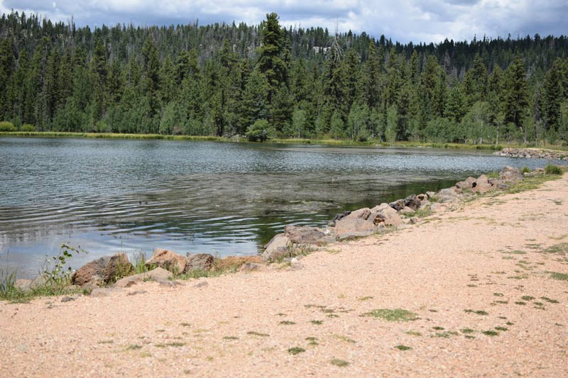

Soda Springs
Weather Summary
Currently:
High: °
Wind Speed: mph
Humidity: %
message
town 5-Day Forecast
Upcoming Events:
Air Idaho Rescue helicopter moving from Soda Springs to Idaho Falls
By Kendra Evensen For the Idaho State Journal Dec 17, 2019
A medical helicopter stationed in Soda Springs for nearly two years will be moving to a new base in Idaho Falls in the future.
Air Methods officials recently announced plans to relocate the helicopter as part of a partnership between Air Idaho Rescue, an Air Methods program, and Eastern Idaho Regional Medical Center in Idaho Falls, where the new base will be located.
“After a thorough review and analysis of its operations, Air Methods decided it would better serve eastern Idaho by moving its Air Idaho Rescue Air 5 A Star Aircraft from Soda Springs to Idaho Falls,” according to a statement Air Methods provided to the Journal.
Air Idaho Rescue has been at the Soda Springs base since April of 2018.
Caribou County Sheriff Kelly Wells said the Air 5 crew has been incredible to work with and a phenomenal resource.
“We are sad to see them leave our area,” Wells said. “Hopefully, they can establish a base in Caribou County in the future.”
Air Methods officials have not announced when they will open the new base, but they did say they will continue serving Caribou County even after, and there shouldn’t be any interruptions in service at the dispatch center.
“Air Methods will continue to cover the Caribou County service area with other Air Idaho Rescue air medical rotor wing and fixed wing aircraft,” according to the statement.
Officials hope they will not only be able to serve Caribou from their new base, but also Bannock, Bonneville, Bingham, Butte, Fremont, Jefferson and Madison counties and surrounding areas. They say the Idaho Falls base will result in quicker response times for emergent and trauma situations and provide support for Neonatal Intensive Care Unit patients in cooperation with EIRMC’s NICU transport team.
“EIRMC provides the highest level of NICU care in the region as the only Level III-B NICU in Eastern Idaho, Western Wyoming and Southwestern Montana,” according to the news release, which adds that the hospital can take babies as low as 22-weeks gestational age.
EIRMC is also home to Idaho’s only Burn Center and the region’s only Level I Intensive Care Unit, according to the news release.
“As the largest medical facility in the region, and the region’s healthcare hub, we serve many rural areas that require air medical services to address emergencies and save lives,” Jeff Sollis, CEO of EIRMC, said in the news release. “Serving southeast Idaho, western Wyoming, Yellowstone National Park and parts of Montana, our partnership with Air Idaho Rescue is an integral element to the care we provide to both residents and tourists.”
Air Methods officials say the new base will be staffed by more than 16 crew members, including pilots, nurses, paramedics and mechanics, and will provide medical services around the clock.
“In emergency situations that we are called to, minutes can be the differences between life and death,” Air Methods area manager Mike Jenkins said in the news release. “We are excited to partner with EIRMC to service Southeastern Idaho and the surrounding areas to ensure emergency medical care is accessible to everyone in these communities. We would also like to thank Caribou Memorial Hospital for their valued partnership and look forward to continued service to the residents of Caribou County and the surrounding areas.”
Contact Us
Address:
The Weather Center
123 Main Street
Franklin, MI 87654
Phone:
(801) 555-1234
Email:
contact@yoururl.com